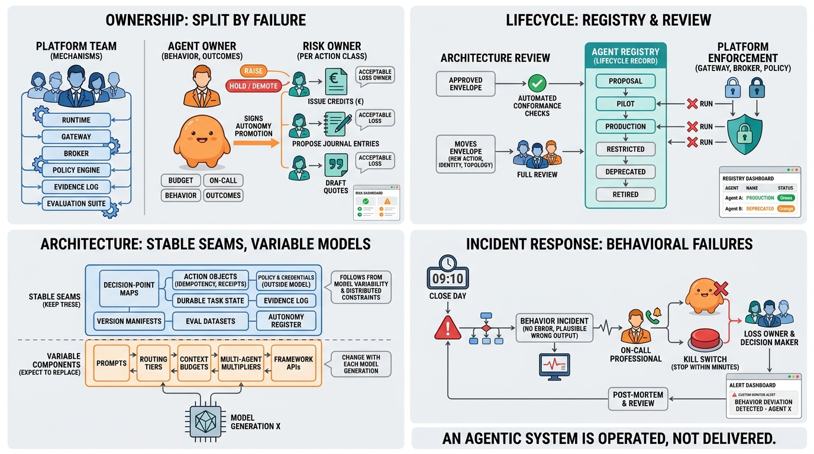

Part X — EVOLUTION: Deployment, Change and Ownership
Ownership, Operations and Evolving the Architecture
AI-assisted: written with Claude Code, images generated with the Gemini API. How this works

Image generated by Google Gemini (gemini-3-pro-image-preview)